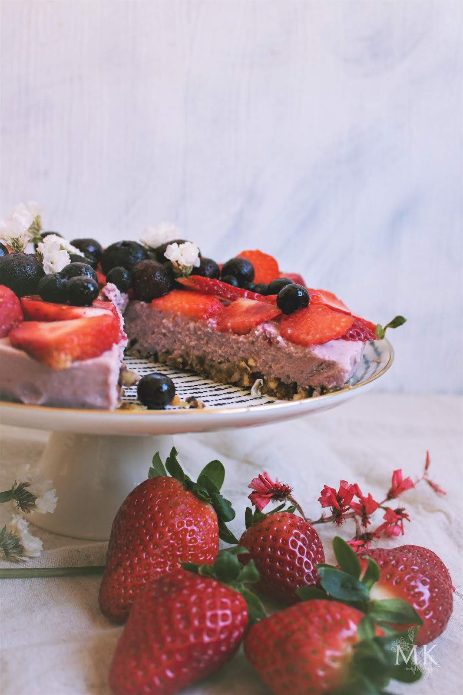

Tarta Cruda de Fresa y Anacardos
Ingredientes
- 2 tazas de fresas frescas
- 1 taza de anacardos remojados
- 1/3 taza de miel o sirope
- 1 cucharadita de esencia de vainilla
- Base de dátiles y nueces (opcional)
Preparación
Licúa los anacardos, fresas, miel y vainilla hasta obtener una mezcla cremosa. Vierte sobre la base y refrigera por 2 horas antes de servir.
⬅ Volver